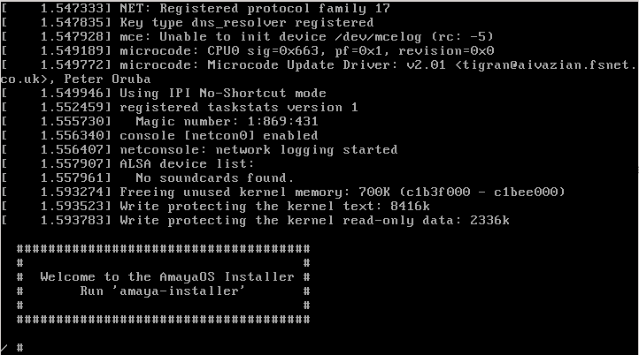
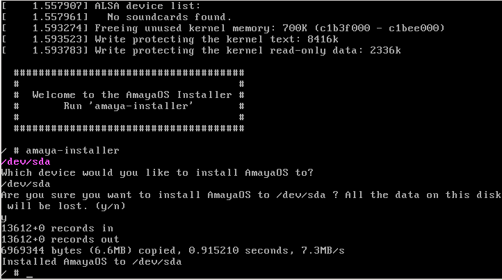

Guide d'installation
Bienvenue sur le guide d'installation d'AmayaOS ! Cette notice vous aidera à installer AmayaOS sur votre disque dur pas a pas dans très peu de temps.

Obtenir AmayaOS
D'abord il faut obtenir une copie d'une image d'AmayaOS. Vous pouvez télécharger une des images précompilées ou bien compiler d'après le code source une image d'installation (seulement pour les utilisateurs avancés). Ensuite vous pouvez graver une image ISO sur un CD (ou DVD), sur un USB ou utiliser une machine virtuelle.
Exécuter l'image d'installation
Vous devez démarrer votre PC étant inserté le CD ou USB et la séquence de démarrage configurée correctement. Au cas où vous utilisiez une machine virtuelle il faut d'abord charger l'image ISO et créer un disque dur virtuel (la configuration de l'émulateur peut différer selon le logiciel d'émulation utilisé). Si tout est bien configuré, on doit observer sur l'écran une image comme celle-ci :

Exécuter l'installateur
Tel comme indiqué sur le capture d'écran, pour exécuter l'installateur vous devez taper « amaya-installer » sur le terminal. Une fois appuyé sur 'ENTER', l'installateur vous demandera sur quel disque dur vous voulez installer AmayaOS :

Tapez « /dev/sda » (si vous utilisez un disque dur sécondaire, vous pouvez installer sur /dev/sdb, /dev/sdc, etc.) et appuyez sur 'ENTER'. L'installateur vous demandera alors si vous êtes sur de vouloir installer sur la partition indiquée puisque tous les données sur cette partition seront effacés lors de l'installation d'AmayaOS. Tapez « y » pour accepter (ou « n » pour annuler l'opération) et AmayaOS sera installé dans quelques secondes.

Une fois le système installé, vous pouvez rédemarrer votre machine, pour faire ça il suffit de taper « poweroff » ou « reboot » pour éteindre ou redémarrer votre machine respectivement. Extrayez le CD ou USB (ou changez la séquence de démarrage) pour démarrer depuis le disque dur et votre ordinateur (ou machine virtuelle) démarrera sous AmayaOS.